📂 Input Seurat objects from: ../data/Seurat_objects
💾 Outputs will be saved under: ../output/EDA_mouse_liver_ST/run_2025-05-22_23-42What Data Do We Have?
For this exploratory data analysis (EDA) we have the same spatial transcriptomics (ST) data generated from mouse model liver tissue that was initially explored in IDE_mouse_liver_ST.qmd.
Run Information
Load the Data
sobj_l1 <- LoadSeuratRds(file.path(
data_dir,
"Seurat_liver1.Rds"
))
sobj_l1An object of class Seurat
970 features across 34452 samples within 1 assay
Active assay: Nanostring (970 features, 0 variable features)
2 layers present: counts, data
2 dimensional reductions calculated: umap, pca
1 spatial field of view present: liver1sobj_l2 <- LoadSeuratRds(file.path(
data_dir,
"Seurat_liver2.Rds"
))
sobj_l2An object of class Seurat
970 features across 33333 samples within 1 assay
Active assay: Nanostring (970 features, 0 variable features)
2 layers present: counts, data
2 dimensional reductions calculated: umap, pca
1 spatial field of view present: liver2Data Exploration
We aim to visualize a variety of features in order to better understand our ST datasets. Our goal is to explore the individual datasets in detail to assess their comparability and determine whether they can be meaningfully merged and integrated.
Spatial Information
Plot all cells in a number of selected fields of view (FOV).
# Plot cells in liver1 FOV 1 and 2
plot <- plots$render_cell_map(sobj_l1, fovs = c("1", "2"))
# Save as .png and .svg to be flexible
ggplot2$ggsave(file.path(out_dir, "cell_map_fov_1_2.png"))Saving 7 x 5 in imageggplot2$ggsave(file.path(out_dir, "cell_map_fov_1_2.svg"))Saving 7 x 5 in imageplot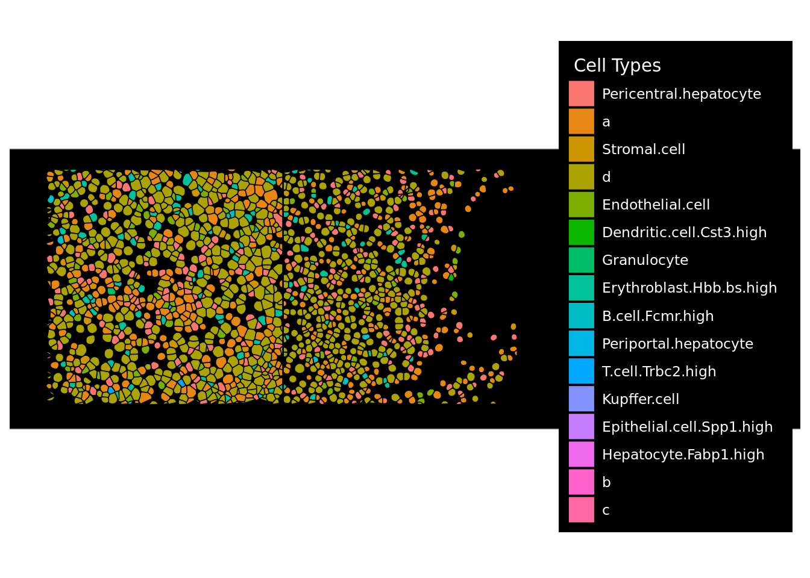
Observations Figure 1:
- Not all parts of the FOV are filled with cells
- Can lead to different cell count distributions across FOVs
Plot transcripts across cells in a selected FOV.
# Plot transcripts in liver1 FOV 1
plot <- plots$render_transcript_map(
sobj_l1,
fovs = c("1"),
genes = c("Pecam1", "C1qc", "Dcn")
)
ggplot2$ggsave(file.path(out_dir, "transcript_map_fov_1.png"))Saving 7 x 5 in imageWarning: Removed 114957 rows containing missing values or values outside the scale range
(`geom_point()`).ggplot2$ggsave(file.path(out_dir, "transcript_map_fov_1.svg"))Saving 7 x 5 in imageWarning: Removed 114957 rows containing missing values or values outside the scale range
(`geom_point()`).plotWarning: Removed 114957 rows containing missing values or values outside the scale range
(`geom_point()`).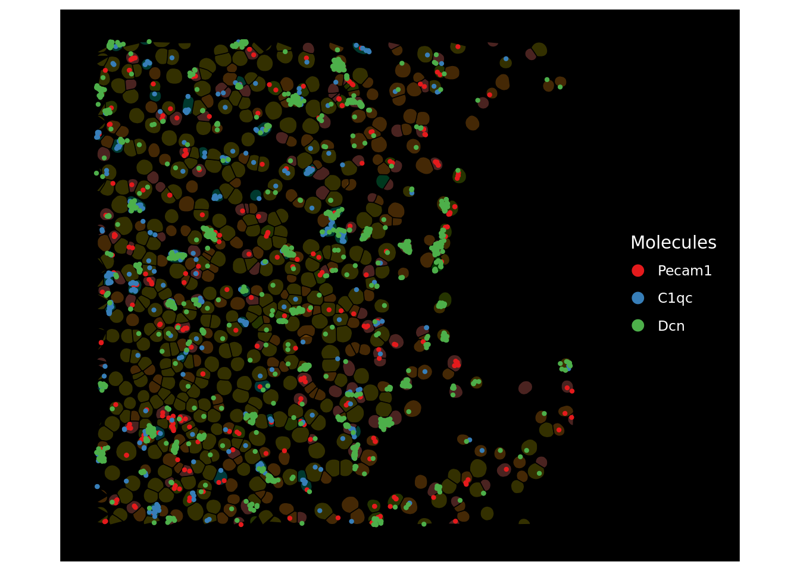
Observations Figure 2:
- Exact locations were transcripts are measured
- Marker genes can visually quantify cell types
Counts
This section examines the individual count distributions within both datasets.
nCount_Nanostring
Value found in the meta.data table in our Seurat objects.
# Names of first five cells in liver1 dataset
# Extracted from metadata table (cells are columns in Seurat)
row_names_first_5 <- rownames(sobj_l1@meta.data)[1:5]
# Counts for first five cells
counts_first_5 <- sobj_l1@assays$Nanostring$counts[, row_names_first_5]
# Sum of counts for first five cells
count_sums_first_5 <- map(row_names_first_5, ~ sum(counts_first_5[, .x]))
# Create tibble for plotting
tibble(
"sum" = count_sums_first_5,
"nCounts_Nanostring" = sobj_l1@meta.data$nCount_Nanostring[1:5]
) |>
tables$render_table(data = _)| sum | nCounts_Nanostring |
|---|---|
| 450 | 450 |
| 780 | 780 |
| 752 | 752 |
| 725 | 725 |
| 395 | 395 |
In Table 1 we see that nCount_Nanostring is equal to sum of counts for each individual cell.
Descriptive Statistics
# Calculate descriptive stats for counts per cell
cell_counts_stats_l1 <- tibble(
"scope" = "cell",
"dataset" = "liver1",
"min" = min(sobj_l1@meta.data$nCount_Nanostring),
"max" = max(sobj_l1@meta.data$nCount_Nanostring),
"median" = median(sobj_l1@meta.data$nCount_Nanostring),
"mean" = mean(sobj_l1@meta.data$nCount_Nanostring),
)
count_counts_stats_l2 <- tibble(
"scope" = "cell",
"dataset" = "liver2",
"min" = min(sobj_l2@meta.data$nCount_Nanostring),
"max" = max(sobj_l2@meta.data$nCount_Nanostring),
"median" = median(sobj_l2@meta.data$nCount_Nanostring),
"mean" = mean(sobj_l2@meta.data$nCount_Nanostring),
)
# Combine tibbles for plotting
# Combine different count statistics in this tibble
desc_stats_counts <- cell_counts_stats_l1 |>
bind_rows(count_counts_stats_l2)
# Plot counts per cell statistics
desc_stats_counts |>
filter(scope == "cell") |> # Counts per cell
select(-scope) |>
tables$render_table(data = _)| dataset | min | max | median | mean |
|---|---|---|---|---|
| liver1 | 20 | 6489 | 819 | 1004.1211 |
| liver2 | 20 | 7242 | 727 | 914.8575 |
Plots
# Prepare data for plotting
# Sum of counts per cell
cell_counts_dist_l1 <- as_tibble(sobj_l1@meta.data$nCount_Nanostring) |>
mutate(dataset = "liver1")
cell_counts_dist_l2 <- as_tibble(sobj_l2@meta.data$nCount_Nanostring) |>
mutate(dataset = "liver2")
# Combine to plotting data
# Save plotting data later as it is changed
pdata_counts_per_cell <- cell_counts_dist_l1 |>
dplyr::bind_rows(cell_counts_dist_l2)
plot <- plots$render_density_plot(
pdata_counts_per_cell,
dataset,
legend = "Datasets",
title = "Count Distributions: Liver1 vs. Liver2",
x_lab = "Counts per Cell"
)
ggplot2$ggsave(file.path(out_dir, "density_counts_per_cell.png"))Saving 7 x 5 in imageggplot2$ggsave(file.path(out_dir, "density_counts_per_cell.svg"))Saving 7 x 5 in imageplot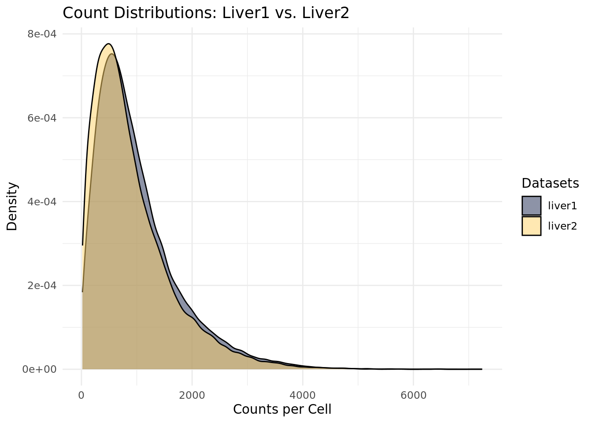
Observations Figure 3:
- Both curves are positive (mean greater then median)
- Mean appears to be around a total expression of ~500
- Tail on right signals bigger amount of outlier cells with very high expression
- Looks like negative binomial distribution
- Similar to scRNA-seq counts
- Similar distributions → enables dataset integration
plot <- plots$render_violin_plot(
pdata_counts_per_cell,
dataset,
legend = "Datasets",
title = "Count Distributions: Liver1 vs. Liver2",
x_lab = "Datasets",
y_lab = "Counts per Cell"
)
ggplot2$ggsave(file.path(out_dir, "violin_counts_per_cell.png"))Saving 7 x 5 in imageggplot2$ggsave(file.path(out_dir, "violin_counts_per_cell.svg"))Saving 7 x 5 in imageplot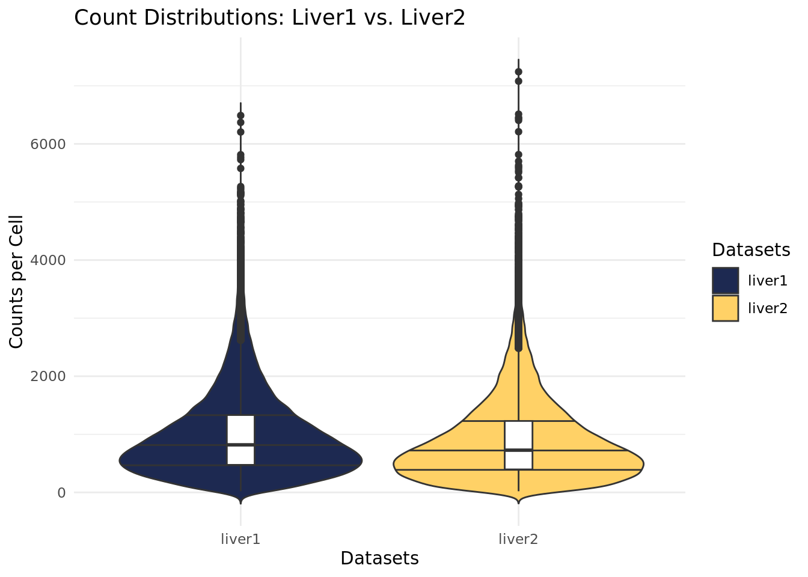
Observations Figure 4:
- median value for both distributions
- Value at ~800 counts per cell
- Similar distribution for outliers
- liver2 has some outliers that have counts above 7000
- Similarity between distributions is reconfirmed
plot <- plots$render_ecdf_plot(
pdata_counts_per_cell,
dataset,
legend = "Datasets",
title = "Count Distributions: Liver1 vs. Liver2",
x_lab = "Counts per Cell",
y_lab = "Cumulative Probability"
)
ggplot2$ggsave(file.path(out_dir, "ECDF_counts_per_cell.png"))Saving 7 x 5 in imageggplot2$ggsave(file.path(out_dir, "ECDF_counts_per_cell.svg"))Saving 7 x 5 in imageplot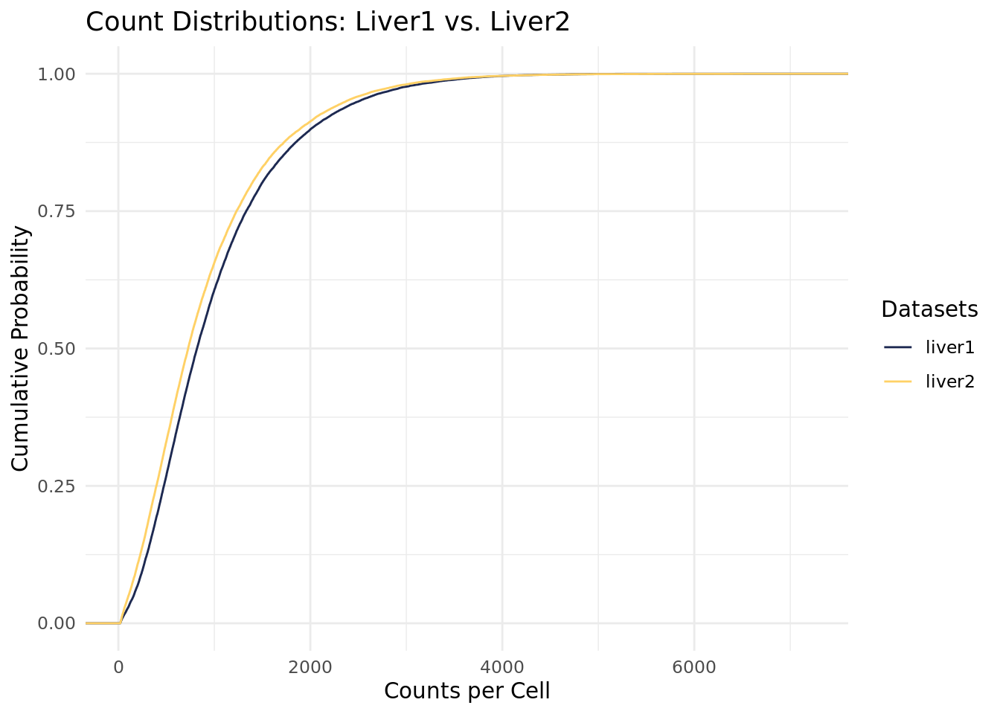
Observations Figure 5:
- Around 50% of cells have summarized counts less then 1000
- Around 88% of cells have summarized counts less then 2000
- Small amount of outliers with very high expressions
nFeature_Nanostring
Value found in the meta.data table in our Seurat objects.
# Sum all non-zero features in a cell
feature_sums_first_5 <- map(row_names_first_5, ~ sum(counts_first_5[, .x] != 0))
# Create tibble for plotting
tibble(
"sum" = count_sums_first_5,
"nFeature_Nanostring" = sobj_l1@meta.data$nFeature_Nanostring[1:5]
) |>
tables$render_table(data = _)| sum | nFeature_Nanostring |
|---|---|
| 450 | 181 |
| 780 | 241 |
| 752 | 260 |
| 725 | 323 |
| 395 | 142 |
In Table 3 we see that nFeature_Nanostring is equal to sum of of all non-zero features for each individual cell.
Descriptive Statistics
# Calculate descriptive stats non-zero features per cell
cell_feats_stats_l1 <- tibble(
"scope" = "feature",
"dataset" = "liver1",
"min" = min(sobj_l1@meta.data$nFeature_Nanostring),
"max" = max(sobj_l1@meta.data$nFeature_Nanostring),
"median" = median(sobj_l1@meta.data$nFeature_Nanostring),
"mean" = mean(sobj_l1@meta.data$nFeature_Nanostring),
)
cell_feats_stats_l2 <- tibble(
"scope" = "feature",
"dataset" = "liver2",
"min" = min(sobj_l2@meta.data$nFeature_Nanostring),
"max" = max(sobj_l2@meta.data$nFeature_Nanostring),
"median" = median(sobj_l2@meta.data$nFeature_Nanostring),
"mean" = mean(sobj_l2@meta.data$nFeature_Nanostring),
)
# Add scope to count statistics
desc_stats_counts <- desc_stats_counts |>
bind_rows(cell_feats_stats_l1) |>
bind_rows(cell_feats_stats_l2)
# Plot non-zero features per cell statistics
desc_stats_counts |>
filter(scope == "feature") |>
select(-scope) |>
tables$render_table(data = _)| dataset | min | max | median | mean |
|---|---|---|---|---|
| liver1 | 10 | 635 | 242 | 248.9423 |
| liver2 | 8 | 651 | 220 | 228.1425 |
Plots
# Prepare data for plotting
# Sum of features per cell
cell_feats_dist_l1 <- as_tibble(sobj_l1@meta.data$nFeature_Nanostring) |>
mutate(dataset = "liver1")
cell_feats_dist_l2 <- as_tibble(sobj_l2@meta.data$nFeature_Nanostring) |>
mutate(dataset = "liver2")
pdata_features_per_cell <- cell_feats_dist_l1 |>
bind_rows(cell_feats_dist_l2)
# Save plotting data
# .feather good for data transfer between R and Python
write_feather(
pdata_features_per_cell,
glue("{out_dir}/pdata_features_per_cell.feather")
)
plot <- plots$render_density_plot(
pdata_features_per_cell,
dataset,
legend = "Datasets",
title = "Non-zero Feature Distributions: Liver1 vs. Liver2",
x_lab = "Non-zero Features per Cell"
)
ggplot2$ggsave(file.path(out_dir, "density_features_per_cell.png"))Saving 7 x 5 in imageggplot2$ggsave(file.path(out_dir, "density_features_per_cell.svg"))Saving 7 x 5 in imageplot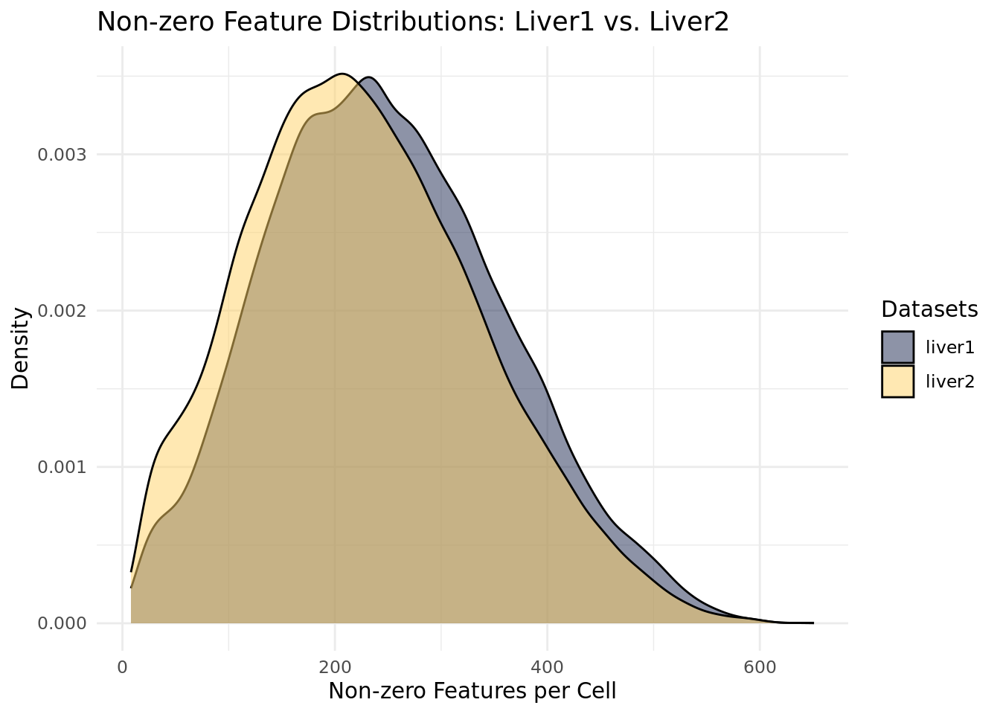
Observations Figure 6:
- Almost normal distributions
- Small tail on the right
- No unexpected results
- Similar distributions → enables dataset integration
Counts per Gene
# Calculate sum of counts per gene for both datasets
# Matrix::rowSums for sparse matrices
gene_counts_l1 <- rowSums(sobj_l1@assays$Nanostring$counts) |>
as_tibble() |>
mutate("dataset" = "liver1")
gene_counts_l2 <- rowSums(sobj_l2@assays$Nanostring$counts) |>
as_tibble() |>
mutate("dataset" = "liver2")Descriptive Statistics
# Calculate descriptive stats counts per gene
gene_counts_stats_l1 <- tibble(
"scope" = "gene",
"dataset" = "liver1",
"min" = min(gene_counts_l1$value),
"max" = max(gene_counts_l1$value),
"median" = median(gene_counts_l1$value),
"mean" = mean(gene_counts_l1$value),
)
gene_counts_stats_l2 <- tibble(
"scope" = "gene",
"dataset" = "liver2",
"min" = min(gene_counts_l2$value),
"max" = max(gene_counts_l2$value),
"median" = median(gene_counts_l2$value),
"mean" = mean(gene_counts_l2$value),
)
# Add scope to count statistics
desc_stats_counts <- desc_stats_counts |>
bind_rows(gene_counts_stats_l1) |>
bind_rows(gene_counts_stats_l2)
# Plot counts per gene statistics
desc_stats_counts |>
filter(scope == "gene") |>
select(-scope) |>
tables$render_table(data = _)| dataset | min | max | median | mean |
|---|---|---|---|---|
| liver1 | 782 | 3539361 | 8247.5 | 35663.90 |
| liver2 | 948 | 2404839 | 7448.5 | 31438.09 |
Plots
# Combine data for plotting
pdata_counts_per_gene <- gene_counts_l1 |>
bind_rows(gene_counts_l2)
# Preprocess for better plotting
pdata_counts_per_gene <- pdata_counts_per_gene |>
rename(raw_counts = value) |>
mutate(value = log10(raw_counts + 1))
write_feather(
pdata_counts_per_gene,
glue("{out_dir}/pdata_counts_per_gene.feather")
)
plot <- plots$render_density_plot(
pdata_counts_per_gene,
dataset,
legend = "Datasets",
title = "Count Distributions: Liver1 vs. Liver2",
x_lab = "log10(Counts per Gene + 1)"
)
ggplot2$ggsave(file.path(out_dir, "density_counts_per_gene.png"))Saving 7 x 5 in imageggplot2$ggsave(file.path(out_dir, "density_counts_per_gene.svg"))Saving 7 x 5 in imageplot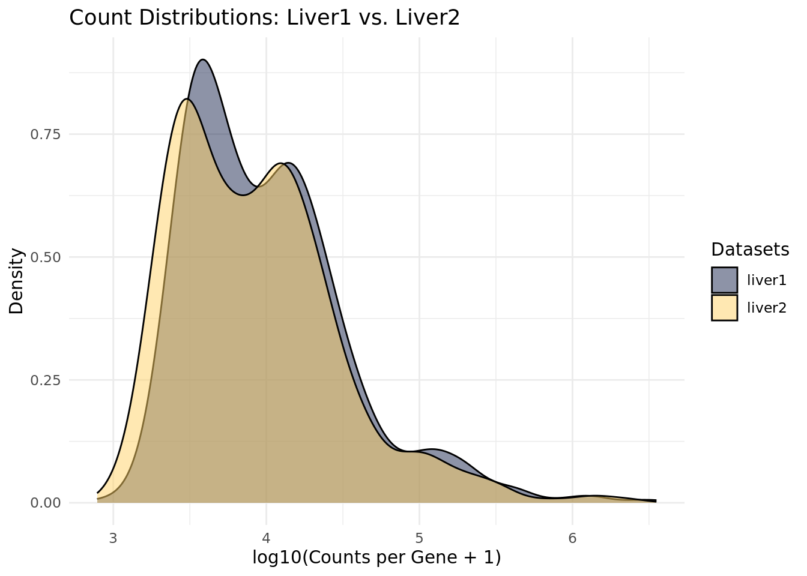
Observations Figure 7:
- Values are log10 normalized
- Values near 0 mean no expression
- Higher values indicate higher expression
- Compared to scRNA-seq data we see high average expression
- No 0 expressed genes (see @descriptive-statistics-gene-counts)
- Similar distributions → enables dataset integration
fov
unique(sobj_l1@meta.data$fov) [1] 1 2 3 4 5 6 7 8 9 10 11 12 13 14 15 16 17 18 19 20 21 22 23 24 25
[26] 26 27 28 29 30 31 32 33 34 35 36 37 38 39 40 41 42 43 44 45unique(sobj_l2@meta.data$fov) [1] 1 2 3 4 5 6 7 8 9 10 11 12 13 14 15 16 17 18 19 20 21 22 23 24 25
[26] 26 27 28 29 30 31 32 33 34 35 36 37 38 39 40 41 42 43 44 45Equal number of FOVs. Need to be properly split in merged dataset.
Number of Unique FOVs
Need to be 90 FOVs in merged dataset.
Visualize UMAPs
Plot the precalculated UMAPs from both datasets in one UMAP.
# Extract UMAP coordinates from both datasets
# Also add metadata for plotting
precalc_umap_l1 <- tibble(
"dataset" = "liver1",
"umap1" = sobj_l1@reductions$umap@cell.embeddings[, 1],
"umap2" = sobj_l1@reductions$umap@cell.embeddings[, 2],
"slide" = sobj_l1@meta.data$Slide_name,
"disease_state" = sobj_l1@meta.data$disease_state,
"cell_type" = sobj_l1@meta.data$nb_clus
)
precalc_umap_l2 <- tibble(
"dataset" = "liver2",
"umap1" = sobj_l2@reductions$umap@cell.embeddings[, 1],
"umap2" = sobj_l2@reductions$umap@cell.embeddings[, 2],
"slide" = sobj_l2@meta.data$Slide_name,
"disease_state" = sobj_l2@meta.data$disease_state,
"cell_type" = sobj_l2@meta.data$nb_clus
)
pdata_precalculated_umap <- precalc_umap_l1 |>
bind_rows(precalc_umap_l2)
write_feather(
pdata_precalculated_umap,
glue("{out_dir}/pdata_precalculated_umap.feather")
)
plot <- plots$render_umap_plot(
pdata_precalculated_umap,
slide,
legend = "Slide",
title = "Precalculated UMAP"
)
ggplot2$ggsave(file.path(out_dir, "precalc_umap_slide.png"))Saving 7 x 5 in imageggplot2$ggsave(file.path(out_dir, "precalc_umap_slide.svg"))Saving 7 x 5 in imageplot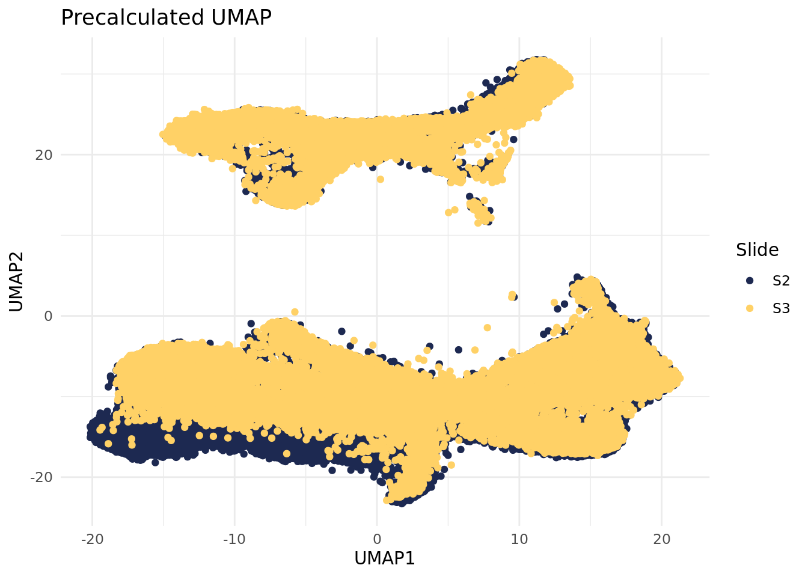
Observations Figure 8:
- Both samples show same UMAP shape
- There appears to be a different batch effect
plot <- plots$render_umap_plot(
pdata_precalculated_umap,
disease_state,
legend = "Disease State",
title = "Precalculated UMAP"
)
ggplot2$ggsave(file.path(out_dir, "precalc_umap_disease_state.png"))Saving 7 x 5 in imageggplot2$ggsave(file.path(out_dir, "precalc_umap_disease_state.svg"))Saving 7 x 5 in imageplot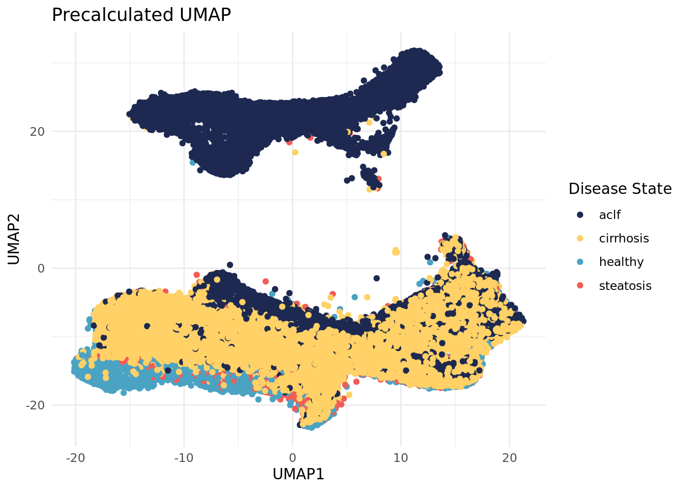
Observations Figure 9:
- Clusters according to disease state
- ACLF cells on top and bottom cluster
- Another stronger batch effect
plot <- plots$render_umap_plot(
pdata_precalculated_umap,
cell_type,
legend = "Cell Type",
title = "Precalculated UMAP"
)
ggplot2$ggsave(file.path(out_dir, "precalc_umap_cell_type.png"))Saving 7 x 5 in imageggplot2$ggsave(file.path(out_dir, "precalc_umap_cell_type.svg"))Saving 7 x 5 in imageplot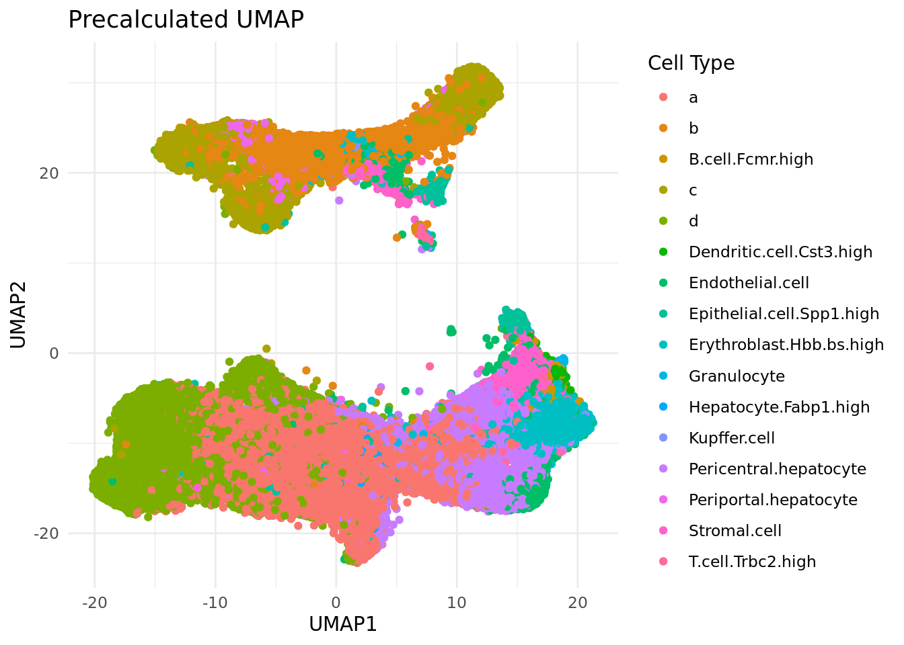
Observations Figure 10:
- Cell type does not appear to be batch effect
- Batch effect needs to be removed
Load Merged Data
sobj_liver_merged <- LoadSeuratRds(file.path(
data_dir,
"Seurat_liver_merged.Rds"
))
sobj_liver_mergedAn object of class Seurat
970 features across 67785 samples within 1 assay
Active assay: Nanostring (970 features, 0 variable features)
2 layers present: counts, data
2 spatial fields of view present: liver1 liver2fov
# Gather all unique FOVs
merged_fovs <- unique(sobj_liver_merged@meta.data$fov)
# Number of unique FOVs
n_fovs <- length(merged_fovs)
n_fovs[1] 90
FOVs in Merged Dataset
90 unique FOVs in the merged dataset. → As expected
Plots
# Counts per cell with disease state information
pdata_cell_counts_per_x <- pdata_counts_per_cell |>
mutate(disease_state = sobj_liver_merged@meta.data$disease_state)
write_feather(
pdata_cell_counts_per_x,
file.path(out_dir, "pdata_counts_per_cell.feather")
)
plot <- plots$render_density_plot(
pdata_cell_counts_per_x,
disease_state,
legend = "Disease State",
title = "Count Distributions Across Disease States",
x_lab = "Counts per Cell"
)
ggplot2$ggsave(file.path(out_dir, "density_cell_counts_per_disease_state.png"))Saving 7 x 5 in imageggplot2$ggsave(file.path(out_dir, "density_cell_counts_per_disease_state.svg"))Saving 7 x 5 in imageplot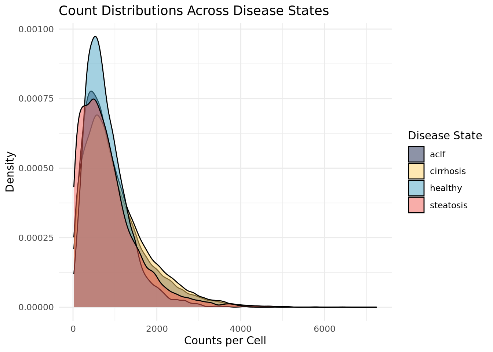
Observations Figure 11:
- Healthy very positively skewed
- Highest peak
- Similar mean expression over all states
- Other three conditions with more variability
- All have outliers
# Create cells per FOV distribution data
pdata_cells_per_fov <- tibble(fov = sobj_liver_merged@meta.data$fov) |>
count(fov, name = "value") |>
separate(col = fov, into = c("group", "dataset"), sep = "_")
write_feather(
pdata_cells_per_fov,
file.path(out_dir, "pdata_cells_per_fov.feather")
)
plot <- plots$render_bar_plot(
pdata_cells_per_fov,
dataset,
legend = "Datasets",
title = "Cells per FOV: Liver1 vs. Liver2",
x_lab = "Number of Cells",
y_lab = "FOV"
)
ggplot2$ggsave(file.path(out_dir, "bars_cells_per_fov.png"))Saving 7 x 5 in imageggplot2$ggsave(file.path(out_dir, "bars_cells_per_fov.svg"))Saving 7 x 5 in imageplot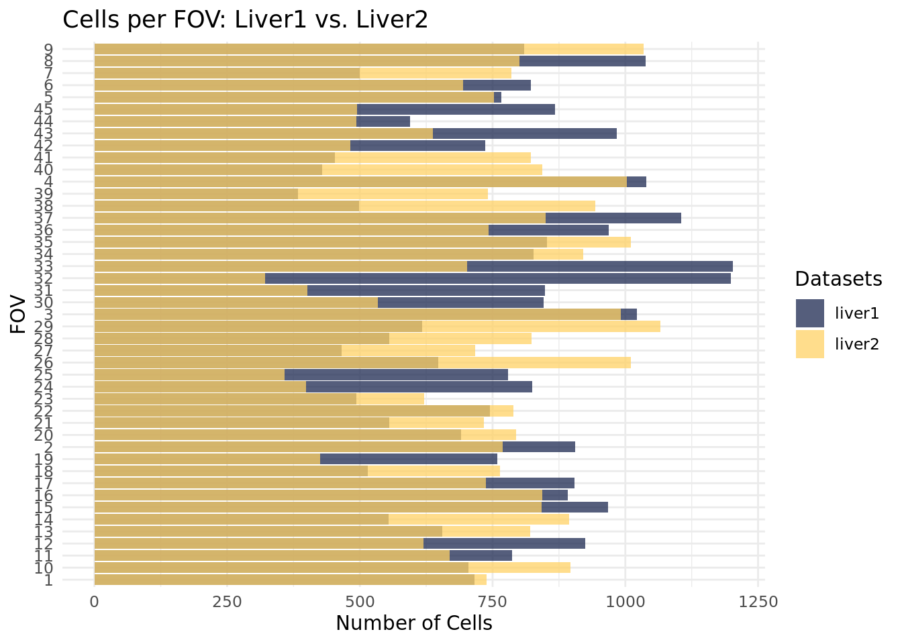
Observations Figure 12:
- Reveals heterogeneous count distributions
- Cells are not similar distributed across FOVs in the dataset
- Cells are not similar distributed across FOVs over both datasets
- Expected, since tissue samples are “random”
- Not 100% of the FOV is tissue
- Big gaps lead to less cells